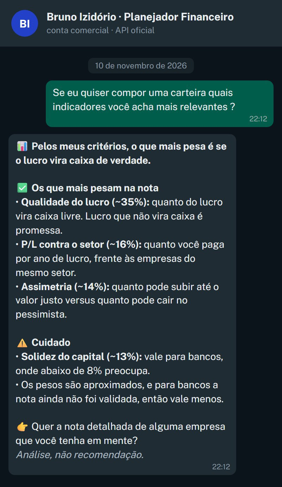
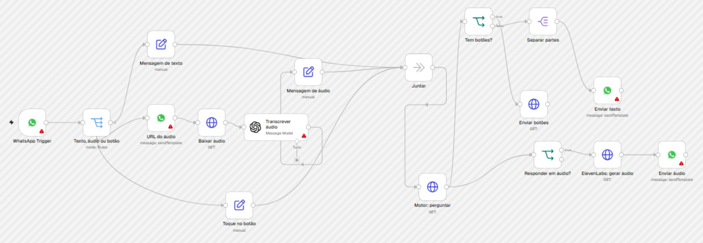
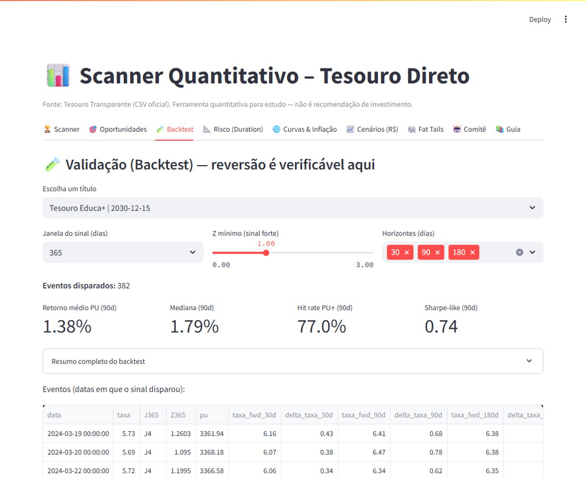
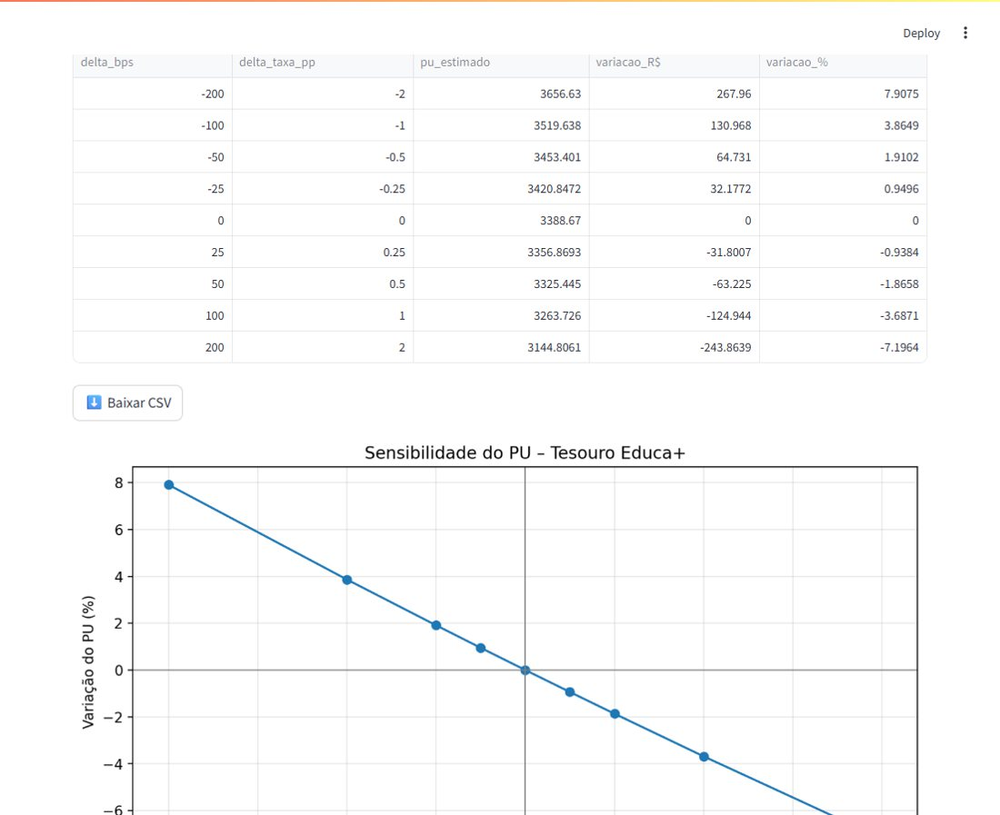
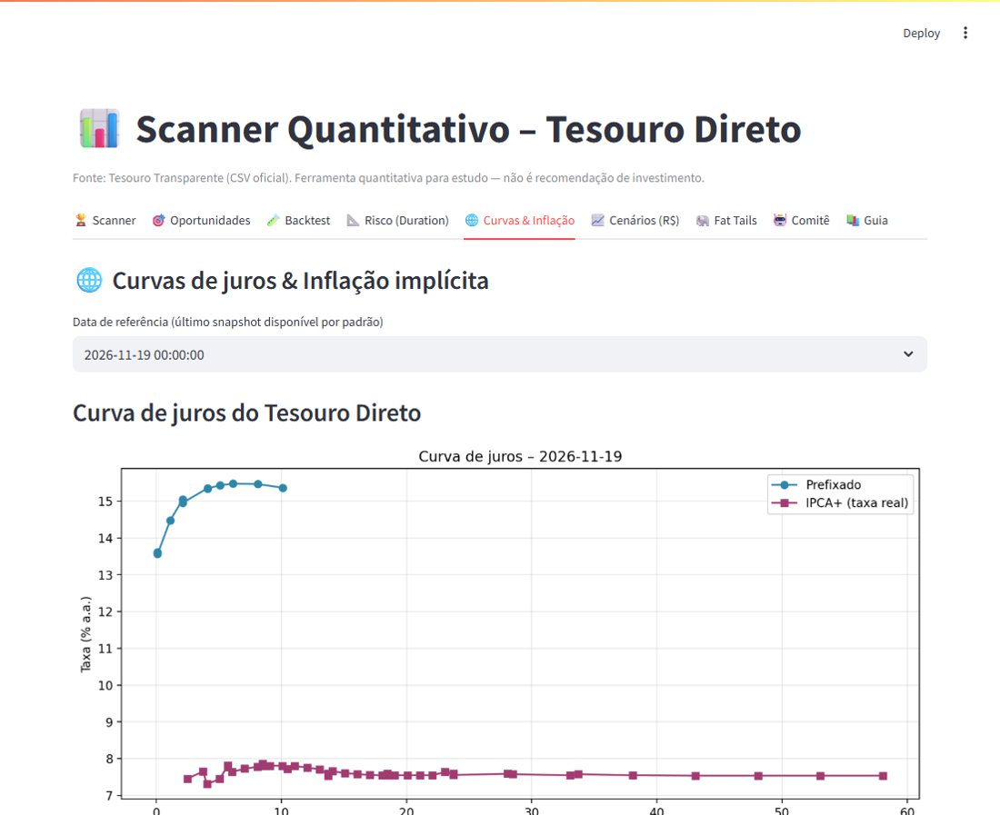
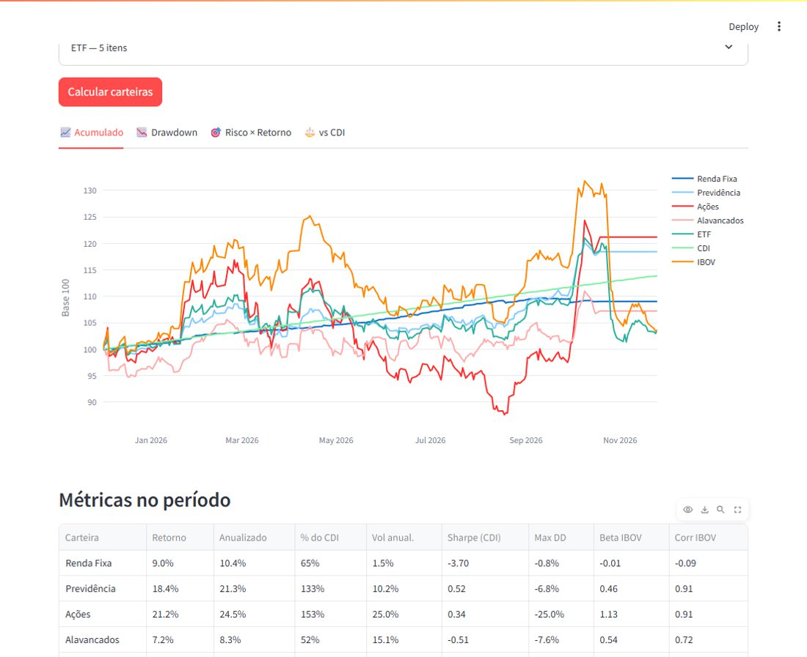

Questões com gabarito calculado, respostas com fonte, aulas animadas e stories, tudo gerado por pipelines de dados e agentes que eu mesmo projetei e opero. Engenheiro mecânico, especialista em IA e engenharia de dados.
Plataforma de estudoQuestão gerada com gabarito calculado; o erro revela o conceitover o caso →Central editorialStory escrito pela IA a partir de fontes e renderizado por códigover o caso →

Agente no WhatsAppConversa real, número oficial da Meta, resposta em blocos com fontever o caso →Aula de cálculo em códigoManim em 1080p60, sincronizado com a narraçãover o caso →Animações sobre opções15 episódios narrados e legendados por pipelinever →
322testes automatizados só na plataforma de estudo, rodados antes de cada mudança
100%das 1.177 citações extraídas por LLM conferidas por código contra o texto original
0 errosem 878 imagens lidas em lote, depois de um piloto de 12
0,30de IC fora da amostra (2025–26) para a nota de qualidade, testada sem viés de sobrevivência
Casos
5 principais · 3 complementares · arquiteturas no atlas
Agente conversacional · WhatsApp oficial
Dá para perguntar sobre a bolsa no WhatsApp sem o bot inventar número?
Eu queria perguntar sobre minha carteira e sobre empresas da bolsa pelo celular e receber uma resposta curta, com lastro. O risco de um agente desses é previsível: o modelo preenche lacuna com número plausível. A arquitetura foi desenhada em volta disso.
Conversa real de 10/11/2026 (execução 87 no n8n), redesenhada a partir do log. Número de telefone omitido.

O fluxo real no n8n, com 17 nós. Texto, áudio (transcrito) e toque em botão viram uma única pergunta ao motor; a resposta sai como texto em partes, botões ou áudio. Credenciais e parâmetros foram removidos da imagem.
Problema
Relatório completo não cabe numa tela de celular, e pergunta ampla ("o que mudou na minha carteira?") travava o primeiro bot, que só sabia responder ativo por ativo.
Decisões
n8n só entrega a mensagem; toda regra fica no motor em Python, testável sem WhatsApp.
O modelo só lê o banco por ferramentas. Ferramentas novas (panorama, novidades) resolveram as perguntas amplas.
Remetente fora da lista é bloqueado por padrão: ninguém gasta API por mim.
Coleta de dado pessoal por formulário com botões, sem passar pelo modelo.
Resultado
Perguntas amplas: de 1 em 5 para 6 em 6 respondidas, US$ 0,02–0,06 cada.
Haiku venceu Opus e Sonnet no mesmo roteiro: mais objetivo e 26× mais barato que o Opus. Se falhar, o Sonnet refaz o turno inteiro.
Formato checado no código: até 3 blocos, 3 tópicos, 14 linhas.
O que eu faria diferente: começaria com domínio fixo em vez de túnel temporário. Cada queda do túnel exigia republicar o webhook, e uma mensagem que chegou atrasada durante uma queda me ensinou a tratar o timestamp da Meta como dado de entrada.
Statusem uso, só para mim
StackPython · FastAPI · SQLite
CanalMeta Cloud API · n8n · Docker
ModeloClaude Haiku 5.5
Engenharia de dados · Pesquisa quantitativa
Uma nota de qualidade das empresas prevê retorno na B3?
Montei uma régua de 0 a 10 para empresas da B3 a partir dos balanços da CVM. Uma nota bem argumentada ainda pode não prever nada, então fiz o teste histórico com o cuidado que costuma faltar: cada data só enxerga o que existia naquela data.
0,175 → 0,254correlação de postos (IC) de 12 meses, régua v1 → v2
0,30IC da v2 fora da amostra, 2025–26 (3 de 3 datas)
+5,4% vs +17,5%retorno médio em 12 meses, terço de nota baixa vs alta
28 de 100empresas com lucro do controlador zerado na CVM em algum trimestre
Problema
Backtest feito com o universo de hoje esconde as empresas que quebraram. E balanço publicado depois da data entra no passado sem ninguém perceber.
Decisões
Universo refeito em cada data pela liquidez daquele momento, com deslistadas encadeadas pelo código CVM.
Pesos da v2 escolhidos só com 2023–24 e testados em 2025–26.
Notas gravadas append-only a cada trimestre, para virar teste fora da amostra daqui para frente.
O que o dado mostrou
Qualidade do lucro sozinha explica boa parte (IC 0,29).
A régua de bancos não validou (IC −0,11 em 46 observações) e ficou marcada como tal.
A nota separa melhor o que evitar do que o que comprar.
O achado que mais valeu: o bug no dado de origem. Em 28 das 100 maiores empresas a CVM traz o lucro do controlador zerado em algum trimestre. Passei a calcular consolidado menos minoritários e refiz todos os testes antes de aprovar os pesos.
Statuspesquisa, sem uso como sinal
StackPython · pandas · parquet
FontesCVM · B3 · BCB IF.data · ANBIMA
Janela14 datas, 2023–2026
Pipeline de extração com LLM
Dá para transformar 12 mil mensagens em fatos citáveis sem o modelo inventar citação?
Assino grupos de análise no Telegram com anos de mensagens, PDFs, planilhas e fotos de documentos. Eu precisava que o agente do caso 1 soubesse o que foi dito, por quem e quando, com link para a mensagem original.
2.495 → 1.177mensagens de analistas destiladas em afirmações estruturadas
100%citações literais conferidas por código contra o texto original
US$ 2,95custo do lote de destilação
890 fotoslidas por visão; só 12 eram tabela de carteira
Pipeline
Coleta incremental com Telethon, uma sessão por vez.
Materiais (PDF, planilha, HTML) baixados com índice próprio.
Fotos lidas em lote pela Batch API, com JSON e tipo de documento.
Destilação: ativo, tipo, direção, valor, citação e link.
Decisões
O modelo propõe a citação; o código só aceita se ela existir literalmente na mensagem.
Toda afirmação de terceiro entra como observação não verificada, nunca como fato.
Piloto de 12 fotos (US$ 0,30) antes do lote de 878.
O que mudou
O piloto derrubou a hipótese inicial: as fotos eram quase todas documentos de empresa, não carteiras. Mudei o uso delas para fonte de fato do analista e busquei preços-teto nos PDFs e planilhas.
Bug pequeno, efeito grande: links depois de emoji saíam cortados, porque o Telegram mede posições em UTF-16 e o Python em code points. Corrigi o extrator e reconstruí as URLs antigas a partir do texto.
Statusrotina pronta, agendamento pendente
StackTelethon · Claude Batch · JSONL
Saídatabela visao_analistas no fatos.db
Custo total≈ US$ 15
Engenharia de software · produto em uso diário
Como saber se alguém domina resistência dos materiais, e não só acertou?
Construí para minha própria preparação ao concurso da Transpetro (engenharia mecânica). Acertar uma questão no chute não prova nada. O motor registra cada tentativa com certeza declarada, tempo e dicas, e só declara domínio quando sete condições são atendidas.
246famílias de questão com gabarito calculado; cada alternativa errada tem um erro conceitual por trás
199habilidades num grafo de pré-requisitos
318erros conceituais catalogados
322testes automatizados em 27 arquivos, 65 commits
Motor
O estado do estudante nunca é gravado: é recalculado a partir das tentativas registradas. Uma regra nova recalcula o histórico inteiro, sem migração.
Diagnóstico D/H/L/E/F: acerto com dúvida, lentidão ou dica é hesitação, não domínio.
Revisões espaçadas em 1, 3, 7, 21 e 60 dias.
Pipeline com LLM sob contrato
Ingestão e enriquecimento em 7 estágios com 10 schemas JSON e 5 níveis de validação.
Cada chamada ao modelo é nova, isolada e sem ferramentas. Nada é sobrescrito e não há reparo automático.
Videoaulas transcritas na GPU local com faster-whisper, sem custo de API.
Entrega
FastAPI com interface pensada para tablet, SQLite por estudante.
Container no Fly.io em São Paulo, com senha obrigatória: sem ela o app nem sobe aberto.
Uso diário na reta final da prova (06/12/2026).
Bug que ensinou: transcrevendo as aulas de inglês com --lang en, o Whisper traduziu a fala do professor brasileiro em vez de transcrever. Agora o idioma é detectado automaticamente e a amostra é conferida antes do lote.
Statusem uso diário
StackPython · FastAPI · SQLite
InfraDocker · Fly.io · JSON Schema
IAfaster-whisper · Claude
Análise quantitativa · renda fixa e fundos
Dá para estudar renda fixa e fundos com o mesmo rigor de uma mesa, usando só dado público?
Dois aplicativos que viraram um só. O scanner do Tesouro Direto lê o histórico oficial do Tesouro Transparente e da ANBIMA. O analisador de fundos cruza 1.058 fundos citados em 492 relatórios com as cotas diárias da CVM. Os dois são ferramentas de estudo: mostram números, testes e riscos, não indicam compra.

Backtest do sinal. Cada vez que a taxa fica fora do normal, o app mede o que aconteceu com o preço 30, 90 e 180 dias depois.

Risco de taxa. Duration, convexidade, DV01 e quanto o preço do título muda com cada choque de juros.

Curva de juros. Prefixado e IPCA+ na mesma data, e a inflação implícita entre os dois.

Carteiras por tipo de fundo. Renda fixa, previdência, ações, alavancados e ETFs contra CDI e Ibovespa, com drawdown e risco × retorno.
Dados
Histórico oficial de preços e taxas do Tesouro e curva da ANBIMA.
Cotas diárias da CVM com cache que só fecha o mês 7 dias depois de ele acabar.
Séries de ETF com defeito (preço congelado, desdobramento sem ajuste) descartadas automaticamente.
Métodos
Quartis e z-score da taxa em janelas de 180, 365 e 730 dias.
Índice de cauda gorda nos retornos do preço, para marcar regimes em que média e desvio enganam.
Cenários em reais: carrego, aportes mensais e venda antecipada.
IA
Comitê de dois agentes (analista técnico e coordenador) que só recebe os números calculados pelo app.
O contexto é montado por código num único bloco: o modelo interpreta, não busca nem inventa dado.
~R$ 0,10–0,20 por consulta.
Statusem uso, estudo próprio
StackPython · Streamlit · pandas
FontesTesouro Transparente · ANBIMA · CVM · BCB
IAClaude, 2 agentes
Automação de conteúdo
Central editorial que gera stories e reels com contrato
A IA escreve o roteiro só a partir das evidências ligadas à pauta. A saída passa por um schema zod compartilhado com o Remotion e por um gate que recusa frase repetida na cena. Voz neural da Azure e render em lote.
Statusem uso
StackPython · Node · Remotion
IAClaude · Azure TTS
Testespytest · node
Vídeo didático automatizado
Aula de cálculo em 1080p60 renderizada por código
Cenas em Manim sincronizadas palavra a palavra com narração ElevenLabs, texto da tela traduzido na hora do render para a versão em inglês. 16 takes, 17 min 19 s, emendas conferidas por script.
Statusversão EN montada
StackManim · Python · ffmpeg
VozElevenLabs
Sync±100 ms
Execução automatizada
Robô que leva sinais de modelo quantitativo ao MetaTrader 5
Lê o sinal por API e envia a ordem ao MT5. Antes de qualquer conta demo, reproduzi o backtest original operação por operação: 43 trades e 68 pontos num contrato, 27 trades no outro, resultado idêntico.
Statusem simulação
StackPython · MetaTrader5
Mercadofuturos B3
Próximodemo 2–4 sem.
O que o dado me desmentiu
erros que encontrei no meu próprio trabalho
Todo projeto acima teve pelo menos uma hipótese minha derrubada pelo dado. Registro aqui o que eu achava, o que apareceu e o que mudou, porque é isso que diz se dá para confiar nos números dos casos.
Eu achava
O dado mostrou
O que mudei
A primeira versão da nota de qualidade previa retorno.
Correlação de −0,20 em 12 meses, positiva em só 1 de 6 datas. A amostra era quase toda de bancos.
Ampliei para mais de 100 empresas sem viés de sobrevivência (IC 0,175). A régua de bancos segue marcada como não validada.
Os dados de lucro da CVM estavam prontos para uso.
Em 28 das 100 maiores empresas, o lucro do controlador vem zerado em algum trimestre.
Passei a usar consolidado menos minoritários e refiz todos os testes antes de aprovar os pesos novos.
As 890 fotos dos grupos eram tabelas de carteira.
O piloto de 12 fotos mostrou que eram quase todas documentos de empresa. Só 12 das 890 eram carteira.
Mudei o uso antes de mandar o lote: viraram fonte de fato para o analista.
O bot respondia bem a qualquer pergunta.
4 de 5 perguntas amplas travavam: ele só sabia responder ativo por ativo.
Criei ferramentas que cruzam o universo inteiro. Passou para 6 de 6.
Preço ajustado do Yahoo era confiável para ETFs.
Seis ETFs com preço congelado de 2022 a 2026 e um desdobramento de 8 para 1 sem ajuste. Contar pregões em vez de dias inflava o retorno anual.
Descarte automático de séries com esses defeitos e retorno calculado por anos de calendário.
Transcrever com o idioma fixado em inglês era o mais preciso.
O Whisper traduziu a fala em português do professor em vez de transcrever.
Detecção automática de idioma e conferência de uma amostra antes do lote.
Como uma resposta é montada
Reprodução do fluxo do caso 1
US$ 0,34Opus · 8 perguntas
US$ 0,20Sonnet · 8 perguntas
US$ 0,013Haiku · escolhido
Etapas e ferramentas reais; dados da resposta são ilustrativos. Nada aqui chama um modelo.
Como trabalho
O código decide, o modelo explica
Conta, teto, elegibilidade e formato ficam em funções puras e testáveis. O LLM lê o resultado e escreve. Assim dá para trocar de modelo sem trocar de regra.
Todo número tem endereço
Cada valor numa resposta carrega o id da fonte. Se o modelo escrever um número que não está no pacote de evidências, a checagem pede reescrita.
Teste antes de confiar
Piloto pequeno antes do lote, backtest antes do sinal, simulação antes da conta real. Quando o teste reprova, o resultado fica registrado junto com o resto.
Custo é requisito
Comparo modelos no mesmo roteiro, uso lote quando não há pressa e deixo a coleta de dado pessoal fora do modelo. Cada caso acima tem o custo medido.
Outros sistemas
menores, também em uso ou em teste
Sistema
O que faz
Técnica central
Status
Análise de licitações
Busca editais no PNCP, lê o edital com LLM, compara preços corrigidos pelo IPCA e simula o lance
API pública do PNCP · Claude · correção monetária
MVP
Radar industrial
Mapeia 761 empresas de 19 segmentos em Marabá e Parauapebas e separa cliente, concorrente e canal
Places API · 55 requisições · classificação por papel
usado na prospecção
Calculadoras de engenharia
NR-13, custo de parada e seleção de equipamentos por TOPSIS, publicadas no site de uma consultoria parceira
Gerador de site estático em Python
revisadas pelos engenheiros
Animações sobre opções
Episódios curtos que explicam opções de compra e venda com analogias, narrados e legendados
Remotion · Azure TTS com marcas de sincronia por palavra
2 episódios
Projetos guiados
implementados por mim nos cursos da Asimov Academy
Curadoria de notícias com equipe de agentes
Começa com um agente único e evolui em quatro versões até uma equipe com papéis separados: pesquisa, apuração de fontes, verificação factual e redação. Cada papel é uma skill própria.
Agno · OpenAI · busca web · FastAPI
Tom das atas do FED e do Copom
Baixa as atas, extrai o texto e classifica o tom de política monetária (mais duro ou mais brando) com um modelo de linguagem pequeno rodando localmente.
Python · BeautifulSoup · Ollama
Agente de WhatsApp com fila
API recebe a mensagem, enfileira e responde por um worker separado, para não perder mensagem sob carga. Memória da conversa em Redis e base de conhecimento em arquivo.
Engenheiro mecânico (Ifes) com especialização em IA e Engenharia de Dados (FIAP) e certificação CNPI. Construo pipelines de dados sobre fontes públicas e privadas e agentes de IA que operam sobre esses dados com controles explícitos: ferramentas tipadas, checagem de saída, contratos de estágio e custo medido. Trabalho de ponta a ponta, da ingestão ao deploy, com testes e documentação de decisões.
Experiência
Syntech Consultoria2026 – atual
Fundador · engenharia de IA, dados e laudos técnicos
Agente de WhatsApp na API oficial da Meta, com motor Python, banco de fatos e checagem de número sem fonte.
Central editorial que gera stories e reels com contrato entre IA e renderizador, mantida em repositório compartilhado por dois agentes de código.
Radar de demanda e de licitações sobre APIs públicas; parceria de engenharia com prospecção baseada em dados.
Projetos
Agente de investimentos no WhatsApp: Python, FastAPI, SQLite, Claude; n8n com 17 nós (áudio, botões, voz). Perguntas amplas de 1 em 5 para 6 em 6 respondidas; modelo escolhido por roteiro fixo, 26× mais barato.
Backtest point-in-time: CVM, B3, BCB. 1.241 observações sem viés de sobrevivência; IC de 12 meses de 0,175 para 0,254; bug de dado em 28 de 100 empresas encontrado e corrigido.
Extração verificada com LLM: Telethon e Batch API. 1.177 afirmações com citação conferida por código; 878 imagens com 0 erros por US$ 12,28.
Scanner de renda fixa e analisador de fundos: Streamlit, Tesouro, ANBIMA e CVM. Backtest de sinal, duration e DV01, curva e inflação implícita; 1.058 fundos; comitê de 2 agentes.
Plataforma de estudo adaptativa: FastAPI, Fly.io. 246 geradores de questão com gabarito calculado, 322 testes.